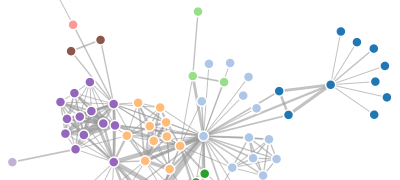

A flexible force-directed graph layout implementation using position Verlet integration to allow simple constraints. For more on physical simulations, see Thomas Jakobsen. This implementation uses a quadtree to accelerate charge interaction using the Barnes–Hut approximation. In addition to the repulsive charge force, a pseudo-gravity force keeps nodes centered in the visible area and avoids expulsion of disconnected subgraphs, while links are fixed-distance geometric constraints. Additional custom forces and constraints may be applied on the "tick" event, simply by updating the x and y attributes of nodes.

Some fun examples:
Like other classes in D3, layouts follow the method chaining pattern where setter methods return the layout itself, allowing multiple setters to be invoked in a concise statement. Unlike some of the other layout implementations which are stateless, the force layout keeps a reference to the associated nodes and links internally; thus, a given force layout instance can only be used with a single dataset.
Note: this layout depends on d3.geom.quadtree, so you must load d3.geom.js, or build a custom d3.js that includes d3.geom.quadtree.
# d3.layout.force()
Constructs a new force-directed layout with the default settings: size 1×1, link strength 1, friction 0.9, distance 20, charge strength -30, gravity strength 0.1, and theta parameter 0.8. The default nodes and links are the empty array, and when the layout is started, the internal alpha cooling parameter is set to 0.1. The general pattern for constructing force-directed layouts is to set all the configuration properties, and then call start:
var force = d3.layout.force()
.nodes(nodes)
.links(links)
.size([w, h])
.start();Note that, like D3's other layouts, the force-directed layout doesn't mandate a particular visual representation. Most commonly, nodes are mapped to SVG circle elements, and links are mapped to SVG line elements. But you might also display nodes as symbols or images.
# force.size([size])
If size is specified, sets the available layout size to the specified two-element array of numbers representing x and y. If size is not specified, returns the current size, which defaults to 1×1. The size affects two aspects of the force-directed layout: the gravitational center, and the initial random position. The center of gravity is simply [x / 2, y / 2]. When nodes are added to the force layout, if they do not have x and y attributes already set, then these attributes are initialized using a uniform random distribution in the range [0, x] and [0, y], respectively.
# force.linkDistance([distance])
If distance is specified, sets the target distance between linked nodes to the specified value. If distance is not specified, returns the layout's current link distance, which defaults to 20. If distance is a constant, then all links are the same distance. Otherwise, if distance is a function, then the function is evaluated for each link (in order), being passed the link and its index, with the this context as the force layout; the function's return value is then used to set each link's distance. The function is evaluated whenever the layout starts. Typically, the distance is specified in pixels; however, the units are arbitrary relative to the layout's size.
Links are not implemented as "spring forces", as in common in other force-directed layouts, but as weak geometric constraints. For each tick of the layout, the distance between each pair of linked nodes is computed and compared to the target distance; the links are then moved towards each other, or away from each other, so as to converge on the desired distance. This method of constraints relaxation on top of position Verlet integration is vastly more stable than previous methods using spring forces, and also allows for the flexible implementation of other constraints in the tick event listener, such as hierarchical layering.
# force.linkStrength([strength])
If strength is specified, sets the strength (rigidity) of links to the specified value in the range [0,1]. If strength is not specified, returns the layout's current link strength, which defaults to 1. If strength is a constant, then all links have the same strength. Otherwise, if strength is a function, then the function is evaluated for each link (in order), being passed the link and its index, with the this context as the force layout; the function's return value is then used to set each link's strength. The function is evaluated whenever the layout starts.
# force.friction([friction])
If friction is specified, sets the friction coefficient to the specified value. If friction is not specified, returns the current coefficient, which defaults to 0.9. The name of this parameter is perhaps misleading; it does not correspond to a standard physical coefficient of friction. Instead, it more closely approximates velocity decay: at each tick of the simulation, the particle velocity is scaled by the specified friction. Thus, a value of 1 corresponds to a frictionless environment, while a value of 0 freezes all particles in place. Values outside the range [0,1] are not recommended and may have destabilizing effects.
# force.charge([charge])
If charge is specified, sets the charge strength to the specified value. If charge is not specified, returns the current charge strength, which defaults to -30. If charge is a constant, then all nodes have the same charge. Otherwise, if charge is a function, then the function is evaluated for each node (in order), being passed the node and its index, with the this context as the force layout; the function's return value is then used to set each node's charge. The function is evaluated whenever the layout starts.
A negative value results in node repulsion, while a positive value results in node attraction. For graph layout, negative values should be used; for n-body simulation, positive values can be used. All nodes are assumed to be infinitesimal points with equal charge and mass. Charge forces are implemented efficiently via the Barnes–Hut algorithm, computing a quadtree for each tick. Setting the charge force to zero disables computation of the quadtree, which can noticeably improve performance if you do not need n-body forces.
# force.theta([theta])
If theta is specified, sets the Barnes–Hut approximation criterion to the specified value. If theta is not specified, returns the current value, which defaults to 0.8. Unlike links, which only affect two linked nodes, the charge force is global: every node affects every other node, even if they are on disconnected subgraphs.
To avoid quadratic performance slowdown for large graphs, the force layout uses the Barnes–Hut approximation which takes O(n log n) per tick. For each tick, a quadtree is created to store the current node positions; then for each node, the sum charge force of all other nodes on the given node are computed. For clusters of nodes that are far away, the charge force is approximated by treating the distance cluster of nodes as a single, larger node. Theta determines the accuracy of the computation: if the ratio of the area of a quadrant in the quadtree to the distance between a node to the quadrant's center of mass is less than theta, all nodes in the given quadrant are treated as a single, larger node rather than computed individually.
# force.gravity([gravity])
If gravity is specified, sets the gravitational strength to the specified value. If gravity is not specified, returns the current gravitational strength, which defaults to 0.1. The name of this parameter is perhaps misleading; it does not corresponding to physical gravity (which can be simulated using a positive charge parameter). Instead, gravity is implemented as a weak geometric constraint similar to a virtual spring connecting each node to the center of the layout's size. This approach has nice properties: near the center of the layout, the gravitational strength is almost zero, avoiding any local distortion of the layout; as nodes get pushed farther away from the center, the gravitational strength becomes strong in linear proportion to the distance. Thus, gravity will always overcome repulsive charge forces as some threshold, prevent disconnected nodes from escaping the layout.
Gravity can be disabled by setting the gravitational strength to zero. If you disable gravity, it is recommended that you implement some other geometric constraint to prevent nodes from escaping the layout, such as constraining them within the layout's bounds.
# force.nodes([nodes])
If nodes is specified, sets the layout's associated nodes to the specified array. If nodes is not specified, returns the current array, which defaults to the empty array. Each node has the following attributes:
These attributes do not need to be set before passing the nodes to the layout; if they are not set, suitable defaults will be initialized by the layout when start is called. However, be aware that if you are storing other data on your nodes, your data attributes should not conflict with the above properties used by the layout.
# force.links([links])
If links is specified, sets the layout's associated links to the specified array. If links is not specified, returns the current array, which defaults to the empty array. Each link has the following attributes:
Note: the values of the source and target attributes may be initially specified as indexes into the nodes array; these will be replaced by references after the call to start. Link objects may have additional fields that you specify; this data can be used to compute link strength and distance on a per-link basis using an accessor function.
# force.start()
Starts the simulation; this method must be called when the layout is first created, after assigning the nodes and links. In addition, it should be called again whenever the nodes or links change. Internally, the layout uses a cooling parameter alpha which controls the layout temperature: as the physical simulation converges on a stable layout, the temperature drops, causing nodes to move more slowly. Eventually, alpha drops below a threshold and the simulation stops completely, freeing the CPU and avoiding battery drain. The layout can be reheated using resume or by restarting; this happens automatically when using the drag behavior.
On start, the layout initializes various attributes on the associated nodes. The index of each node is computed by iterating over the array, starting at zero. The initial x and y coordinates, if not already set externally to a valid number, are computed by examining neighboring nodes: if a linked node already has an initial position in x or y, the corresponding coordinates are applied to the new node. This increases the stability of the graph layout when new nodes are added, rather than using the default which is to initialize the position randomly within the layout's size. The previous px and py position is set to the initial position, if not already set, giving new nodes an initial velocity of zero. Finally, the fixed boolean defaults to false.
The layout also initializes the source and target attributes on the associated links: for convenience, these attributes may be specified as a numeric index rather than a direct link, such that the nodes and links can be read-in from a JSON file or other static description that may not allow circular linking. The source and target attributes on incoming links are only replaced with the corresponding entries in nodes if these attributes are numbers; thus, these attributes on existing links are unaffected when the layout is restarted. The link distances and strengths are also computed on start.
# force.alpha([value])
Gets or sets the force layout's cooling parameter, alpha. If value is specified, sets alpha to the specified value and returns the force layout. If value is greater than zero, this method also restarts the force layout if it is not already running, dispatching a "start" event and enabling the tick timer. If value is nonpositive, and the force layout is running, this method stops the force layout on the next tick and dispatches an "end" event. If value is not specified, this method returns the current alpha value.
# force.resume()
Equivalent to:
force.alpha(.1);Sets the cooling parameter alpha to 0.1. This method sets the internal alpha parameter to 0.1, and then restarts the timer. Typically, you don't need to call this method directly; it is called automatically by start. It is also called automatically by drag on mouseover.
# force.stop()
Equivalent to:
force.alpha(0);Terminates the simulation, setting the cooling parameter alpha to zero. This can be used to stop the simulation explicitly, for example, if you want to show animation or allow other interaction. If you do not stop the layout explicitly, it will still stop automatically after the layout's cooling parameter decays below some threshold.
# force.tick()
Runs the force layout simulation one step. This method can be used in conjunction with start and stop to compute a static layout. For example:
force.start();
for (var i = 0; i < n; ++i) force.tick();
force.stop();The number of iterations depends on the graph size and complexity. The choice of initial positions can also have a dramatic impact on how quickly the graph converges on a good solution. For example, here the nodes are arranged along the diagonal:
var n = nodes.length;
nodes.forEach(function(d, i) {
d.x = d.y = width / n * i;
});If you do not initialize the positions manually, the force layout will initialize them randomly, resulting in somewhat unpredictable behavior.
# force.on(type, listener)
Registers the specified listener to receive events of the specified type from the force layout. Currently, only "tick" events are supported, which are dispatched for each tick of the simulation. Listen to tick events to update the displayed positions of nodes and links. For example, if you initially display the nodes and links like so:
var link = vis.selectAll("line")
.data(links)
.enter().append("line");
var node = vis.selectAll("circle")
.data(nodes)
.enter().append("circle")
.attr("r", 5);You can set their positions on tick:
force.on("tick", function() {
link.attr("x1", function(d) { return d.source.x; })
.attr("y1", function(d) { return d.source.y; })
.attr("x2", function(d) { return d.target.x; })
.attr("y2", function(d) { return d.target.y; });
node.attr("cx", function(d) { return d.x; })
.attr("cy", function(d) { return d.y; });
});In this case, we've stored the selections node and link on initialization, so that we don't need to reselect the nodes on every tick. If you prefer, you can display nodes and links differently; for example, you might use symbols rather than circles.
# force.drag()
Bind a behavior to nodes to allow interactive dragging. Use this in conjunction with the call operator on the nodes; for example, say node.call(force.drag) on initialization. The drag event sets the fixed attribute of nodes on mouseover, such that as soon as the mouse is over a node, it stops moving. Fixing on mouseover, rather than on mousedown, makes it easier to catch moving nodes. When a mousedown event is received, and on each subsequent mousemove until mouseup, the node center is set to the current mouse position. In addition, each mousemove triggers a resume of the force layout, reheating the simulation. This behavior also supports touch events for iOS.
Implementation note: the mousemove and mouseup event listeners are registered on the current window, such that when the user starts dragging a node, they can continue to drag the node even if the mouse leaves the window. Each event listener uses the "force" namespace, so as to avoid collision with other event listeners you may wish to bind to nodes or to the window. If a node is moved by the drag behavior, the subsequent click event that would be triggered by the final mouseup is captured and stopped from propagating. This allows you to register click event handlers on nodes that will only be triggered if nodes are clicked without dragging.